library(tidyverse)
library(plotly)
library(tidymodels)
library(rpart)
library(rpart.plot)
library(vip)
library(corrplot)Explorando las características musicales en Spotify
Introducción:
Todas aquellas personas que alguna vez escucharon un “Top 50 Uruguay” probablemente se hayan preguntado (o no) cual es la razon de la popularidad de esas canciones que ahi se encuentran. Queremos conocer cuales son los patrones que se repiten con frecuencia y como se relacionan entre si y que tienen que ver la popularidad de una cancion, estaremos trabajando con las herramientas proporcionadas en el curso para renponder lal pregunta: ¿Que hace a una cancion exitosa?
Este data set contiene informacion sobre los tracks de Spotify en donde se representan hasta 125 generos musicales distintos, cada fila representa una sola cancion y cada columna representa caracteristicas de estos temas musicales. Incluyendo:
track_id – ID unico recibido por cada cancion.
artists – Nombre del artista que interpreta la cancion
popularity – Valor entre 0 y 100 que muestra que tan popular es una cancion, un valor mas alto significa que es mas popular. Se base en la cantidad de veces que fue reproducida y que tan recientes son las reproducciones.
duration_ms – Duracion de la cancion en milisegundos
explicit – Indica si la cancion contiene vocabulario explicito (para adultos):
true = Si
false = No o Desconocido
- danceability – Que tan bailable es una cancion:
(0 = menos bailable, 1 = mas bailable).
- energy – Que tan energetica se siente la cancion:
(0 = calm/soft, 1 = very energetic/loud).
loudness – Mide que tan ruidosa es una cancion en decibles (dB).
mode – Indica si la cancion es:
1 = Major (cancion feliz)
0 = Minor (cancion triste)
- speechiness – Mide el uso de las palabras que se usan en una cancion:
Cercano a 1 = Conversaciones o canciones habladas (ejemplo, podcast)
Entre 0.33–0.66 = Mezcla de palabras y musica (ejemplo, rap)
Debajo 0.33 = Totalmente musical
- acousticness – Probabilidad de cuan acustica es una cancion:
(1 = very likely acoustic).
instrumentalness – Probabilidad de que la cancion solo tenga instrumentos (1 = no singing).
liveness – Probabilidad de que la cancion haya sido grabada en vivo (higher value = more likely live).
valence – Describe el animo de la cancion:
High value = Happy/positive
Low value = Sad/negative
tempo – Velocida de la cancion medida en beats por minuto (BPM)
track_genre – Genero musical de la cancion
Fuente de datos:
Cargamos y limpiamos los datos:
Debemos contar con los datos mas limpios posibles, nos deshacemos de los NA, las variables tipo character y de variables que no aportan informacion relevante como track_id.
dataset <- read_csv('dataset.csv')
glimpse(dataset)Rows: 114,000
Columns: 21
$ ...1 <dbl> 0, 1, 2, 3, 4, 5, 6, 7, 8, 9, 10, 11, 12, 13, 14, 15,…
$ track_id <chr> "5SuOikwiRyPMVoIQDJUgSV", "4qPNDBW1i3p13qLCt0Ki3A", "…
$ artists <chr> "Gen Hoshino", "Ben Woodward", "Ingrid Michaelson;ZAY…
$ album_name <chr> "Comedy", "Ghost (Acoustic)", "To Begin Again", "Craz…
$ track_name <chr> "Comedy", "Ghost - Acoustic", "To Begin Again", "Can'…
$ popularity <dbl> 73, 55, 57, 71, 82, 58, 74, 80, 74, 56, 74, 69, 52, 6…
$ duration_ms <dbl> 230666, 149610, 210826, 201933, 198853, 214240, 22940…
$ explicit <lgl> FALSE, FALSE, FALSE, FALSE, FALSE, FALSE, FALSE, FALS…
$ danceability <dbl> 0.676, 0.420, 0.438, 0.266, 0.618, 0.688, 0.407, 0.70…
$ energy <dbl> 0.4610, 0.1660, 0.3590, 0.0596, 0.4430, 0.4810, 0.147…
$ key <dbl> 1, 1, 0, 0, 2, 6, 2, 11, 0, 1, 8, 4, 7, 3, 2, 4, 2, 1…
$ loudness <dbl> -6.746, -17.235, -9.734, -18.515, -9.681, -8.807, -8.…
$ mode <dbl> 0, 1, 1, 1, 1, 1, 1, 1, 1, 1, 1, 1, 0, 1, 1, 1, 1, 0,…
$ speechiness <dbl> 0.1430, 0.0763, 0.0557, 0.0363, 0.0526, 0.1050, 0.035…
$ acousticness <dbl> 0.0322, 0.9240, 0.2100, 0.9050, 0.4690, 0.2890, 0.857…
$ instrumentalness <dbl> 1.01e-06, 5.56e-06, 0.00e+00, 7.07e-05, 0.00e+00, 0.0…
$ liveness <dbl> 0.3580, 0.1010, 0.1170, 0.1320, 0.0829, 0.1890, 0.091…
$ valence <dbl> 0.7150, 0.2670, 0.1200, 0.1430, 0.1670, 0.6660, 0.076…
$ tempo <dbl> 87.917, 77.489, 76.332, 181.740, 119.949, 98.017, 141…
$ time_signature <dbl> 4, 4, 4, 3, 4, 4, 3, 4, 4, 4, 4, 3, 4, 4, 4, 3, 4, 4,…
$ track_genre <chr> "acoustic", "acoustic", "acoustic", "acoustic", "acou…dataset |> summarise(across(everything(), ~sum(is.na(.))))# A tibble: 1 × 21
...1 track_id artists album_name track_name popularity duration_ms explicit
<int> <int> <int> <int> <int> <int> <int> <int>
1 0 0 1 1 1 0 0 0
# ℹ 13 more variables: danceability <int>, energy <int>, key <int>,
# loudness <int>, mode <int>, speechiness <int>, acousticness <int>,
# instrumentalness <int>, liveness <int>, valence <int>, tempo <int>,
# time_signature <int>, track_genre <int>#Existe un único NA en artist otro en album_name y otro en track_name
#Elimino canciones duplicadas y filas con faltantes
dataset <- dataset |> distinct(track_id, .keep_all = TRUE) |> drop_na()
#Tenemos demasiadas variables para realizar los modelos de machine learning. Generamos dataset auxiliar donde eliminamos las variables tipo character y factorizamos los géneros y la variable explicit para que el proceso sea más eficiente. Se elimina variable que enumera las canciones
dataset_reducido <- dataset |>
mutate(track_genre = as.factor(track_genre),
explicit = as.factor(explicit)) |>
select(-where(is.character)) |> select(-...1)Análisis exploratorio:
Cantidad de canciones por estilo.
#Agrupamos por genero, para cada genero medimos la cantidad de canciones y el promedio de popularidad para cada genero. Ordenamos de forma descendiente
resumen_generos <- dataset |>
group_by(track_genre) |>
summarise(
cantidad = n(),
pop_media = mean(popularity, na.rm = TRUE)
) |>
arrange(desc(pop_media))
#Graficamos
ggplot(resumen_generos, aes(x = reorder(track_genre, cantidad), y = cantidad, fill = pop_media)) +
geom_col() +
scale_fill_gradient(low = "lightblue", high = "darkred", name = "Popularidad\nmedia") +
coord_flip() +
labs(title = "Cantidad de canciones por género y su popularidad media",
x = "Género",
y = "Cantidad de canciones")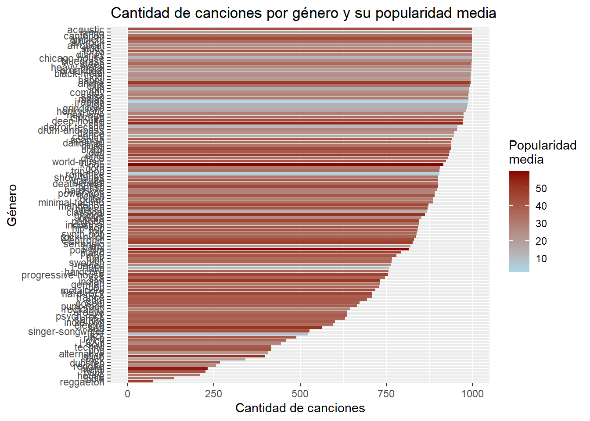
#Son demasiados nos quedamos con el top 25 de géneros segun popularidad media
resumen_top25 <- resumen_generos |> slice_head(n = 25)
ggplot(resumen_top25, aes(x = reorder(track_genre, cantidad), y = cantidad, fill = pop_media)) +
geom_col() +
scale_fill_gradient(low = "lightblue", high = "darkred", name = "Popularidad media") +
coord_flip() +
labs(title = "Cantidad de canciones por género y su popularidad media",
x = "Género",
y = "Cantidad de canciones")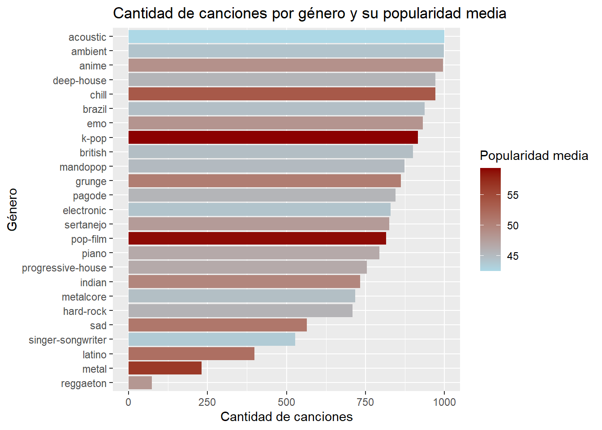
#Vemos los 25 géneros de menor popularidad media
resumen_ultimos25 <- resumen_generos |> slice_tail(n = 25)
ggplot(resumen_ultimos25, aes(x = reorder(track_genre, cantidad), y = cantidad, fill = pop_media)) +
geom_col() +
scale_fill_gradient(low = "lightblue", high = "darkred", name = "Popularidad") +
coord_flip() +
labs(title = "Cantidad de canciones por género y su popularidad media",
x = "Género",
y = "Cantidad de canciones")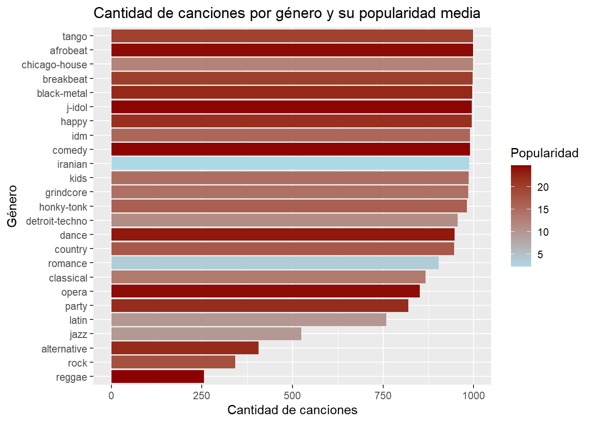
En el primer grafico notamos que teniamos demasiados generos musicales, por lo tanto limpiamos y dejamos los 25 generos segun su popularidad media. En el segundo grafico, una vez disminuidos los generos, graficamos en funcion de los generos musicales mas populares del dataset, rellenamos segun su puntaje de popularidad y notamos que tenemos generos que dominan en cantidad como accustic pero no en popularidad, contrario al metal que no alcanza las 250 canciones dentro del dataset pero si alcanza un altisimo nivel de popularidad. En el tercer grafico observamos los 25 generos menos populares y se puede observar que existen generos como el iranian al que no le va muy bien en terminos de popularidad pero que cuentan con muchas canciones dentro del dataset, por lo que podemos decir que a mayor cantidad de canciones de un genero no necesariamente asegura que sean populares.
Distribución de la popularidad:
# Distribución de popularidad en histograma
ggplot(dataset, aes(x = popularity)) +
geom_histogram(bins = 40, fill = "#2E8B57", color = "white", alpha = 0.9, linewidth = 0.2) +
labs(
title = "Distribución de popularidad",
subtitle = "Cantidad de canciones según su nivel de popularidad",
x = "Popularidad",
y = "Cantidad de canciones"
) +
theme_minimal(base_size = 13) +
theme(
plot.title = element_text(face = "bold", size = 16),
plot.subtitle = element_text(color = "gray40", size = 11),
panel.grid.minor = element_blank(),
panel.grid.major.x = element_blank(),
axis.title = element_text(face = "bold")
)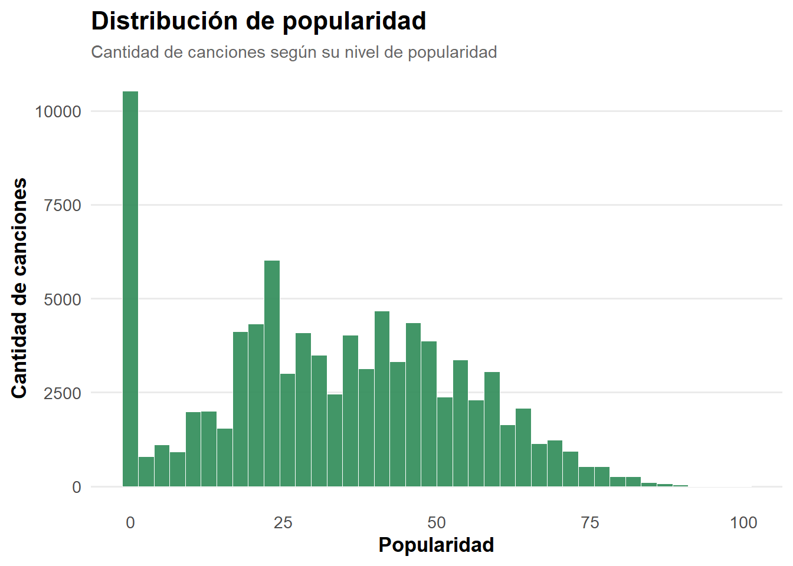
#La mayoria de las canciones tienen baja popularidad podriamos filtrar las que tienen masObservamos la distribucion de la variable de popularidad. Notamos una excesiva cantidad de canciones puntuadas en 0, puede deberse a la poca actividad que presentan, muy recientes en la plataforma o con muy pocas reproducciones. El resto del histograma sigue una forma normal, con la popularidad concentrada entre el 25 y 55, intervalo dentro del cual se encuentra la media de popularidad de las canciones. Por ultimo observamos que muy pocas canciones superan un puntaje de 75 puntos de popularidad, por lo que es coherente que existan pocos “hits mundiales”.
Popularidad por género
# Popularidad por género en diagrama de cajas
p1 <- ggplot(dataset, aes(x = track_genre, y = popularity, fill = track_genre)) +
geom_boxplot() +
theme(legend.position = "none") +
labs(title = "Popularidad por género")
p1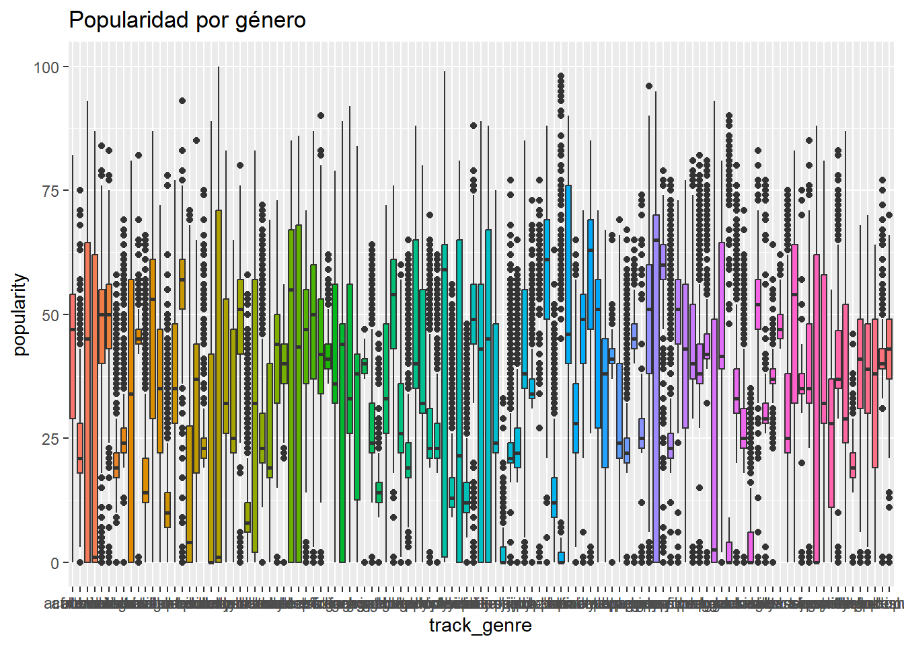
#Hay demasiados generos habria que acotar, nos quedamos con los 10 generos mas populares
# Calculamos la popularidad promedio por género y nos quedamos con los 10 más altos
top10_generos <- dataset |>
group_by(track_genre) |>
summarise(pop_media = median(popularity, na.rm = TRUE)) |>
arrange(desc(pop_media)) |>
slice_head(n = 10) |>
pull(track_genre)
p2 <- dataset |>
filter(track_genre %in% top10_generos) |>
mutate(track_genre = fct_reorder(track_genre, popularity, .fun = median)) |>
ggplot(aes(x = track_genre, y = popularity, fill = track_genre)) +
geom_boxplot(outlier.alpha = 0.3, outlier.size = 1) +
coord_flip() +
scale_fill_viridis_d(option = "D") +
labs(
title = "Popularidad por género (Top 10)",
subtitle = "Ordenado por mediana de popularidad",
x = NULL,
y = "Popularidad"
) +
theme_minimal(base_size = 13) +
theme(
legend.position = "none",
plot.title = element_text(face = "bold"),
panel.grid.minor = element_blank()
)
p2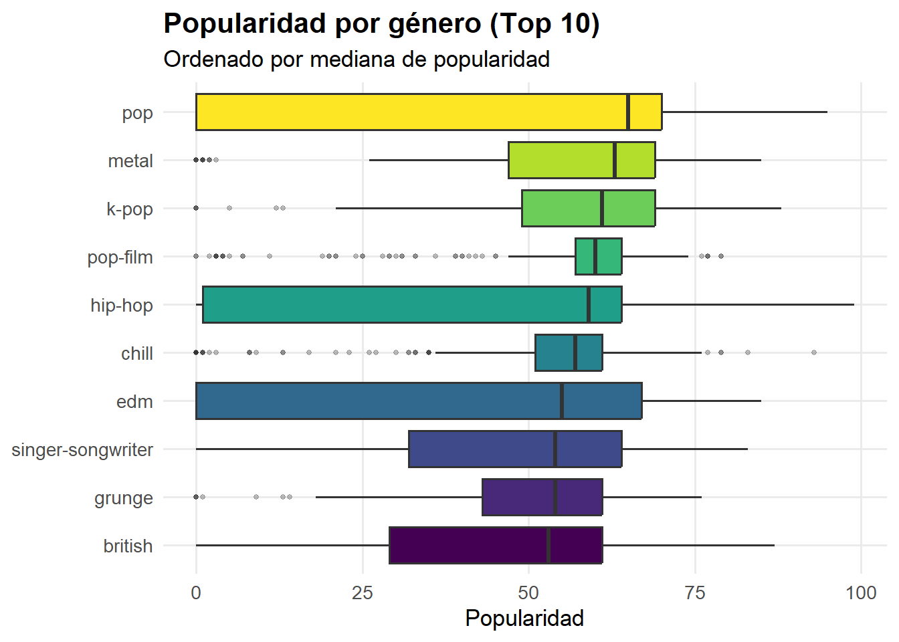
Generamos un boxplot para los 10 generos mas populares en orden descendiente. Podemos observar que el pop lidera claramente: la mediana más alta y una caja bastante compacta (poca dispersión), lo que indica que casi todas las canciones de pop tienen popularidad alta.
Popularidad por características del audio:
# Correlaciones entre características de audio y la popularidad de las canciones
audio_vars <- dataset |>
select(danceability, energy, loudness, speechiness, acousticness,
instrumentalness, liveness, valence, tempo, popularity)
cor_matrix <- cor(audio_vars, use = "complete.obs")
cor_matrix |>
as.data.frame() |>
rownames_to_column("var1") |>
filter(var1 == "popularity") |>
pivot_longer(-var1, names_to = "var2", values_to = "corr") |>
filter(var2 != "popularity") |>
ggplot(aes(x = reorder(var2, corr), y = corr, fill = corr)) +
geom_col() +
scale_fill_gradient2(low = "blue", high = "red", mid = "white", midpoint = 0) +
coord_flip() +
labs(title = "Correlación de cada característica de audio con popularidad",
x = "Característica", y = "Correlación")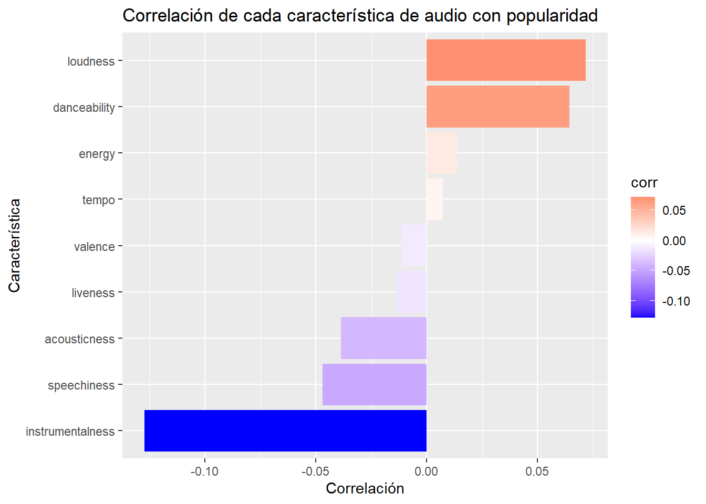
#Del genero POP tomamos las caracteristicas de audio
POP<- dataset |>
filter(track_genre=="pop") |>
select(popularity,danceability,energy,loudness,speechiness,acousticness, instrumentalness, liveness, valence, tempo) |>
drop_na()
#Correlación de popularidad y caracteristicas de audio, pero solo entre canciones pop
matriz_pop<- cor(POP)
corrplot(matriz_pop, method = "color", type = "upper",
addCoef.col = "black", tl.col = "black", tl.srt = 45,
number.cex = 0.7,
title = "Correlación dentro del género POP")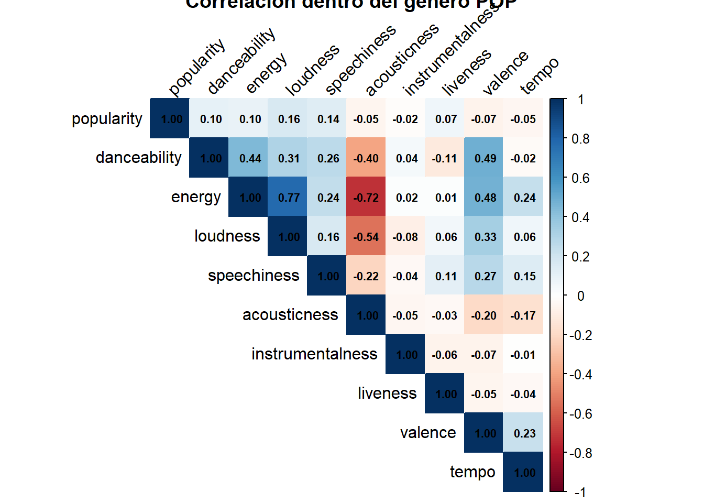
El primer grafico nos permite visualizar las correlaciones entre la popularidad y las caracteristicas del audio ordenadas de mayor a menor. Dentro de las correlaciones positivas encontramos ruido, bailabilidad, energia y tempo, no es una correlacion muy cercana al 1 sin embargo son caracteristicas que encontramos facilmente en canciones populares. Dentro de las relaciones negativas hallamos instrumentales, acustica y letra/voz. Sugiere que las canciones con estas carecteriticas tienden a ser menos populares
Como nuestro objetivo es encontrar una receta para crear una cancion famosa, queremos saber como se relacionan las caracteristicas de una cancion con su popularidad. Hasta ahora encontramos que el genero pop es el mas popular, pero ¿Que hace popular al pop?
En mapa de calor del pop las canciones más ruidosas, más bailables y más energéticas tienden a ser levemente más populares.
Modelos predictivos:
#Receta
set.seed(123)
split <- initial_split(dataset_reducido, prop = 0.8, strata = popularity)
train <- training(split)
test <- testing(split)
receta <- recipe(popularity ~ danceability + energy + loudness + speechiness + acousticness + instrumentalness + liveness + valence +tempo + duration_ms + explicit, data = train) |>
step_normalize(all_numeric_predictors()) |>
step_dummy(explicit)Modelo Arbol de decisión
#Arbol de regresion. Va a predecir el promedio mas de popularidad, cual es el promedio de calificacion del 1 al 100 entre las canciones mas populares
modelo_arbol <- decision_tree()|>
set_engine('rpart')|>
set_mode('regression')|>
fit(popularity~., data= train)
rpart.plot(modelo_arbol$fit, roundint = FALSE)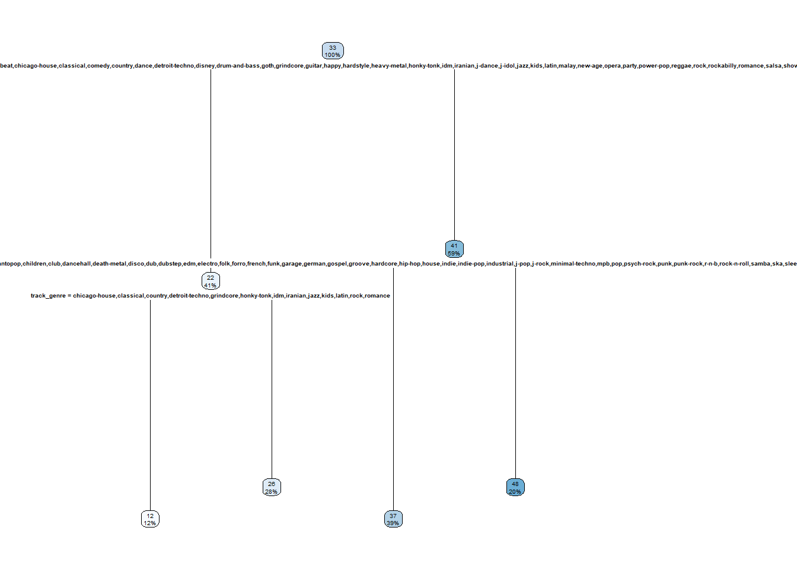
resultados_tree_entrenamiento<- train |> select(popularity) |>
bind_cols(predict(modelo_arbol,train)) |>
rename(.pred_tree=.pred)
resultados_tree_entrenamiento |> head(50)# A tibble: 50 × 2
popularity .pred_tree
<dbl> <dbl>
1 0 37.4
2 0 37.4
3 1 37.4
4 0 37.4
5 0 37.4
6 0 37.4
7 0 37.4
8 0 37.4
9 0 37.4
10 0 37.4
# ℹ 40 more rowsresultados_tree_entrenamiento |> distinct(.pred_tree)# A tibble: 4 × 1
.pred_tree
<dbl>
1 37.4
2 25.9
3 48.4
4 12.0#Predice entre 4 niveles de popularidad
resultados_tree_entrenamiento |> ggplot(aes(x=popularity,y=.pred_tree))+
geom_point()+
theme_bw()+
labs(title = "Predicciones del promedio de popularidad",
x="populariad", y= "prediccion")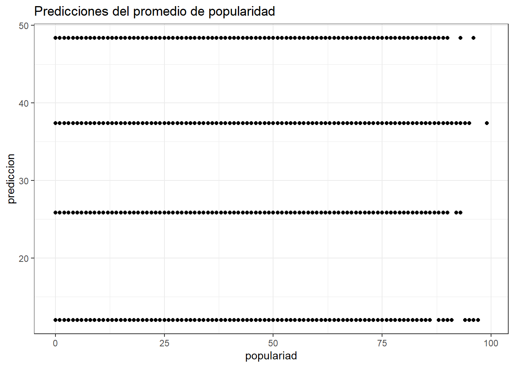
#Evaluamos el algoritmo en los datos de entrenamiento
metrics(resultados_tree_entrenamiento, truth = popularity, estimate = .pred_tree)# A tibble: 3 × 3
.metric .estimator .estimate
<chr> <chr> <dbl>
1 rmse standard 17.3
2 rsq standard 0.295
3 mae standard 12.6 # el modelo explica el 29% de la variación en popularidad, con un error típico de 12.5 puntos y un error promedio de 17 puntos
#Evaluacion respecto de test
resultados_tree_test= test |> select(popularity) |>
bind_cols(predict(modelo_arbol, test)) |>
rename(.pred_tree=.pred)
resultados_tree_test |> head()# A tibble: 6 × 2
popularity .pred_tree
<dbl> <dbl>
1 73 37.4
2 71 37.4
3 67 37.4
4 70 37.4
5 0 37.4
6 0 37.4resultados_tree_test |> distinct(.pred_tree)# A tibble: 4 × 1
.pred_tree
<dbl>
1 37.4
2 25.9
3 48.4
4 12.0#Metricas
metrics(resultados_tree_test, truth = popularity, estimate = .pred_tree)# A tibble: 3 × 3
.metric .estimator .estimate
<chr> <chr> <dbl>
1 rmse standard 17.3
2 rsq standard 0.289
3 mae standard 12.5 En el arbol:
Nodo raíz (33, 100%): valor promedio de popularity predicho = 33 para el 100% de los datos, antes de dividir.
La primera división es por genero: separa entre un grupo de géneros menos populares (rama izquierda) vs. el resto (rama derecha, 41 puntos, 59% de los datos).
La rama derecha (41, 59%) tiene popularidad promedio más alta, géneros como pop, hip-hop, house, etc. tienden a ser más populares que la rama izquierda.
Dentro de esa rama derecha, se vuelve a dividir por género: el nodo 48 (20%) aísla géneros aún más populares (probablemente pop, k-pop, reggaeton, etc.), mientras el nodo 37 (39%) queda con popularidad intermedia.
La rama izquierda (22, 41%) tiene popularidad más baja en promedio, y se subdivide otra vez por género en 12 (12%) — el grupo menos popular de todo el árbol— y 26 (28%).
Una vez comparando los resultados de las metricas del arbol de regresion y del random forest, no son buenos generalizando los resultados, agrandar el arbol para distinguir las caracteristicas de audio generaria un sobreajuste, ya que simplemente no tienen mucho poder predictivo adicional.
Random Forest
#Se realiza random forest
popularidad_rf = rand_forest(trees = 500) |>
set_engine('ranger',importance='impurity') |>
set_mode('regression') |>
fit(popularity~., data= train)
popularidad_rfparsnip model object
Ranger result
Call:
ranger::ranger(x = maybe_data_frame(x), y = y, num.trees = ~500, importance = ~"impurity", num.threads = 1, verbose = FALSE, seed = sample.int(10^5, 1))
Type: Regression
Number of trees: 500
Sample size: 71790
Number of independent variables: 15
Mtry: 3
Target node size: 5
Variable importance mode: impurity
Splitrule: variance
OOB prediction error (MSE): 260.9361
R squared (OOB): 0.3845574 #Vemos variables más importantes para la prediccción
popularidad_rf |> vip(num_features = 15)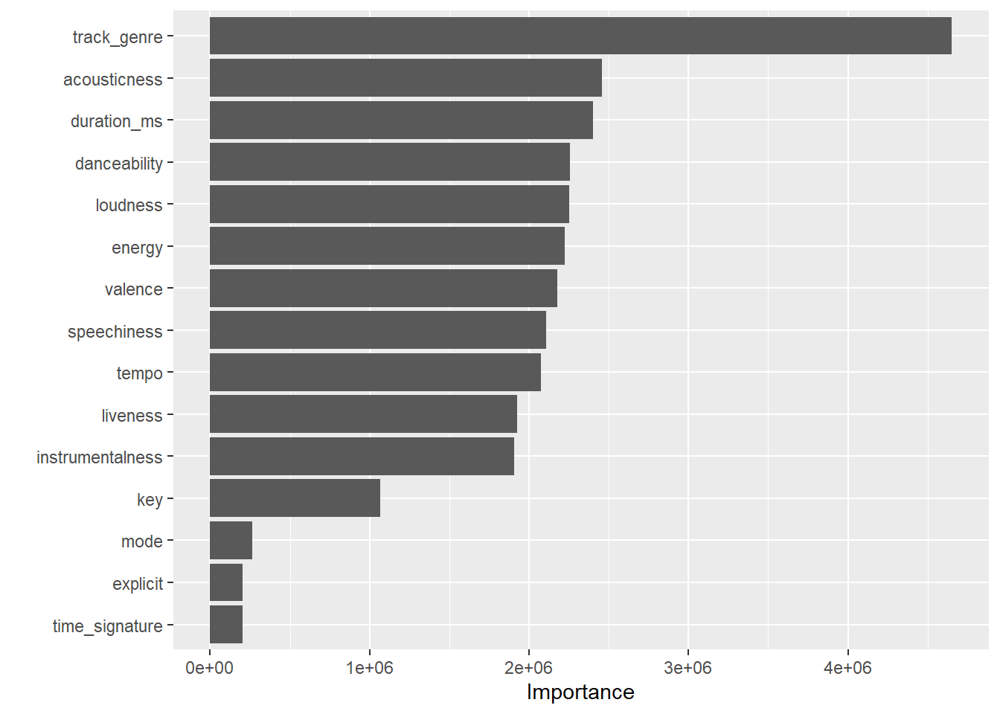
#Vemos predicciones vs popularidad real
predicciones <- predict(popularidad_rf, new_data = test) |>
bind_cols(test)
predicciones# A tibble: 17,950 × 17
.pred popularity duration_ms explicit danceability energy key loudness
<dbl> <dbl> <dbl> <fct> <dbl> <dbl> <dbl> <dbl>
1 34.0 73 230666 FALSE 0.676 0.461 1 -6.75
2 38.6 71 201933 FALSE 0.266 0.0596 0 -18.5
3 44.0 67 260186 FALSE 0.717 0.32 3 -8.39
4 63.4 70 229400 FALSE 0.407 0.147 2 -8.82
5 2.00 0 131760 FALSE 0.62 0.309 5 -9.21
6 9.37 0 259558 FALSE 0.296 0.206 0 -11.8
7 9.20 0 230098 FALSE 0.568 0.686 1 -6.64
8 45.9 60 241119 FALSE 0.494 0.652 6 -5.86
9 36.6 75 254400 FALSE 0.375 0.457 3 -7.02
10 42.9 64 222146 FALSE 0.705 0.347 2 -8.25
# ℹ 17,940 more rows
# ℹ 9 more variables: mode <dbl>, speechiness <dbl>, acousticness <dbl>,
# instrumentalness <dbl>, liveness <dbl>, valence <dbl>, tempo <dbl>,
# time_signature <dbl>, track_genre <fct>#Graficamos predicciones vs popularidad real
predicciones |>
ggplot(aes(x = popularity, y = .pred)) +
geom_point(alpha = 0.4) +
geom_abline(linetype = "dashed", color = "red") +
labs(x = "Popularidad real", y = "Popularidad predicha")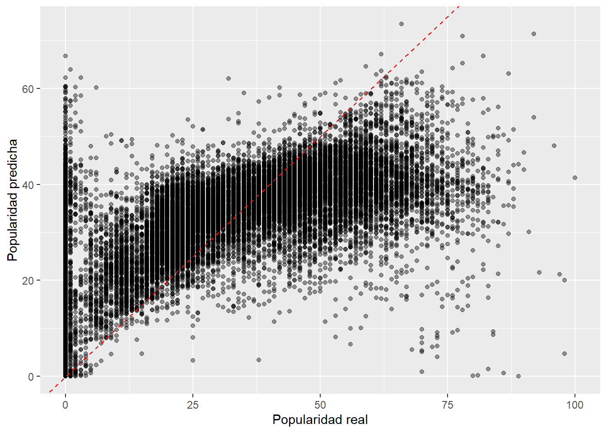
#Vemos métricas
predicciones |> metrics(truth = popularity, estimate = .pred)# A tibble: 3 × 3
.metric .estimator .estimate
<chr> <chr> <dbl>
1 rmse standard 16.1
2 rsq standard 0.397
3 mae standard 12.0 Comparación de modelos
#Generamos cuadro de comparacion de modelos
resultados_rf_test <- predict(popularidad_rf, new_data = test) |>
rename(.pred_rf = .pred) |>
bind_cols(test)
comparacion <- metrics(resultados_tree_test, truth = popularity, estimate = .pred_tree) |>
mutate(modelo = "Árbol") |>
bind_rows(
metrics(resultados_rf_test, truth = popularity, estimate = .pred_rf) |>
mutate(modelo = "Random Forest")
)
comparacion# A tibble: 6 × 4
.metric .estimator .estimate modelo
<chr> <chr> <dbl> <chr>
1 rmse standard 17.3 Árbol
2 rsq standard 0.289 Árbol
3 mae standard 12.5 Árbol
4 rmse standard 16.1 Random Forest
5 rsq standard 0.397 Random Forest
6 mae standard 12.0 Random ForestComentarios finales:
Según los datos, el género musical importa mucho más que las características acústicas de la canción (el “qué tipo de música haces” pesa más que el “cómo suena técnicamente”) pero esto probablemente refleja tamaño de audiencia y visibilidad en la plataforma.
Por lo tanto, no podemos afirmar que “hacer una cancion pop” causa exito. Es un genero que esta sometido a mucha visualizacion del medio debido a su naturaleza mainstream. Sin embargo a traves del estudio pudimos identificar correlaciones altas entre el genero pop con caracteristicas de audio como bailabilidad y ruido que pueden ser consideradas a la hora de producir una cancion para una plataforma como Spotify.
Aplicación Shiny:
Objetivo:
La aplicación tiene como objetivo permitir una exploración interactiva de las relaciones entre las características de audio y la popularidad de las canciones, complementando el análisis estático de las secciones anteriores. Permite al usuario elegir libremente qué géneros y qué rango de popularidad explorar.
Diseño:
La interfaz tiene un panel lateral de controles y un panel principal con cuatro pestañas: popularidad por género, distribución de popularidad, dispersión entre dos características de audio elegidas por el usuario, y una tabla interactiva con los datos filtrados.
Aporte al analisis:
La app permite verificar si patrones detectados a nivel global, como la relación entre bailabilidad/energía y popularidad que encontramos en el género pop, se sostienen o cambian al explorar otros géneros o rangos de popularidad específicos.